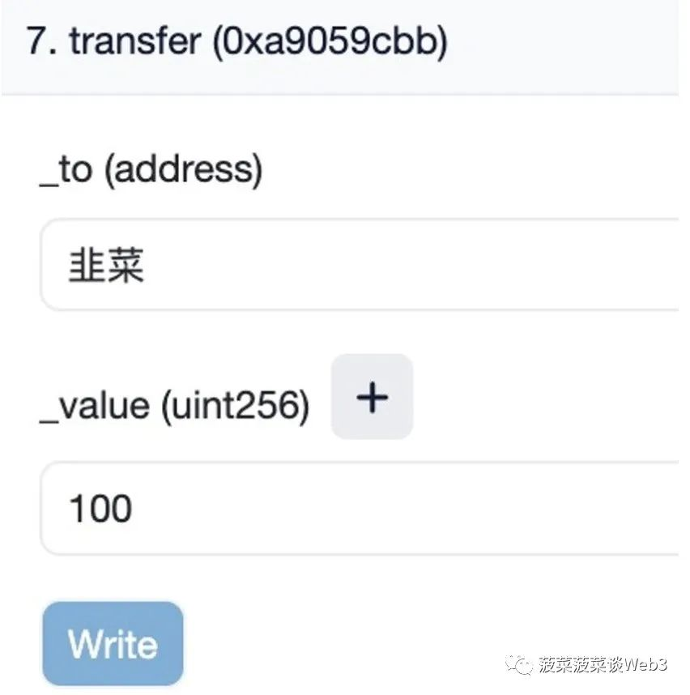
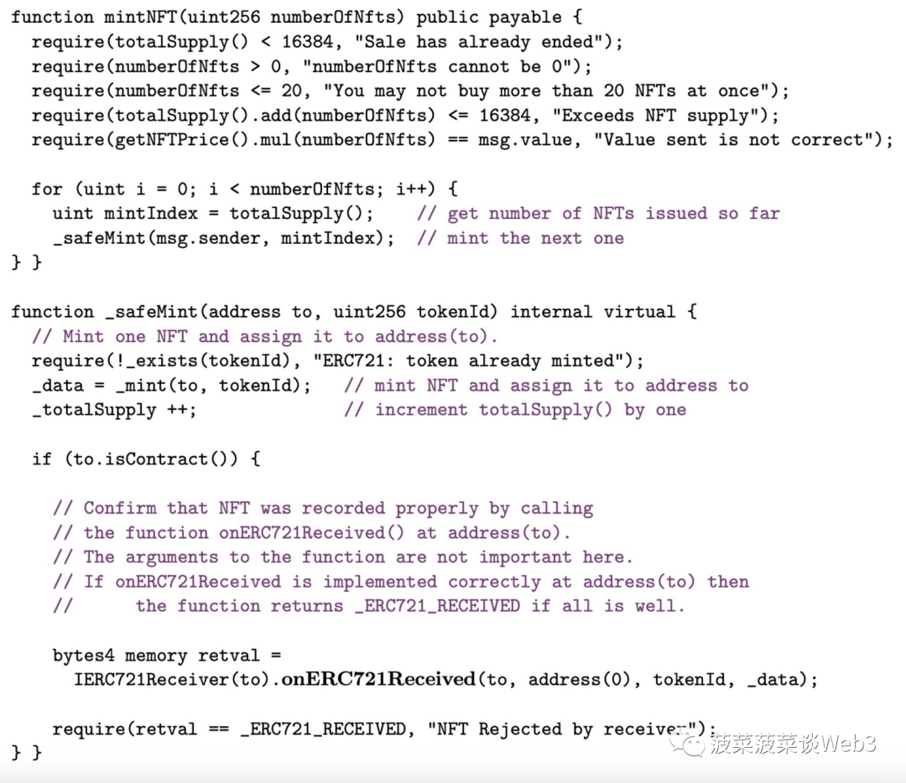
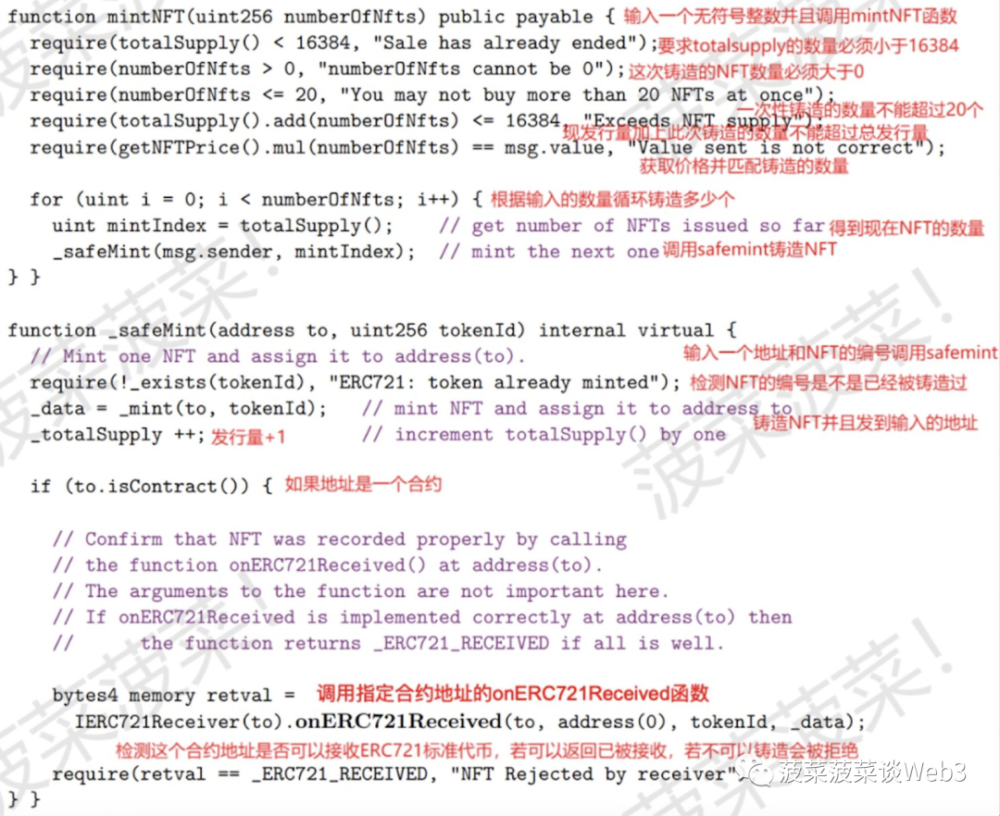
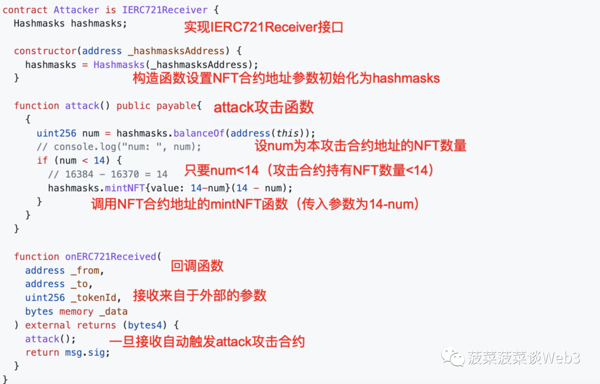

你想了解黑客的世界吗？你是否想体验一把黑客的感觉吗？如何使用重入攻击合约去攻击一个NFT项目？菠菜将带你们体验黑客的视角呈现如何找到智能合约中的漏洞并进行攻击。
由于本文涉及到智能合约代码技术，所以菠菜为了照顾不懂技术的小伙伴会将每一行代码的逻辑都解释清楚方便小伙伴们理解智能合约并找到其中的逻辑漏洞。
谨记：本文案例仅用于科普教育用途，攻击智能合约是违反道德的行为，它可能会导致用户在无意中失去其加密资产，也可能会对整个区块链网络的安全性构成威胁。
本文案例来源于斯坦福大学2021年的加密技术课程期末考试题，题目链接：
https://cs251.stanford.edu/hw/final2021.pdf
如果你不懂什么是智能合约（Smart Contract）和函数（Function），那么让菠菜先来解释一下：智能合约是一种运行在区块链上自动化的、可编程的程序。我们向智能合约输入某些参数，它会自动根据编写者编写的代码逻辑执行特定的操作，我们熟知的各种NFT项目以及各种Token就是一个个智能合约。
而函数就是智能合约中的某一个具体功能，当我们调用智能合约中的函数传入参数就会触发这个函数的代码逻辑，比如菠菜在链上给韭菜转了100USDT其实就是调用了USDT智能合约的transfer（转移）函数，图中我向函数传入了我要转的地址和数量等参数，智能合约就会根据我传入的参数执行操作。

那么什么是重入攻击呢？
区块链中的重入攻击是指攻击者在智能合约中重复执行某些函数，从而导致合约的异常行为。重入攻击是智能合约中最常见的一种攻击，每年几乎都会有数次重入攻击的事件导致各种项目高达千万美金的损失。
最著名的重入攻击事件莫过于2016年，以太坊上的The DAO合约被重入攻击，黑客盗走了合约中的 3,600,000个ETH，这件事情也导致了以太坊将账本回滚至黑客未攻击之前，从而诞生了以太坊的硬分叉—以太坊经典（ETC），所以有意思的是现在的以太坊账本中这个重入攻击事件并没有发生。
那么现在就让我们走进黑客的视角，了解黑客是如何找到漏洞进行重入攻击的我们来看题目：下面的 Solidity 代码片段用于一个包含16384个非同质化代币（NFT）的空投。用户可以通过调用NFT合约上的mintNFT（）函数一次领取多达20个NFT。（下图为该函数源代码，懂技术的小伙伴可以先尝试找找漏洞

问题有三个：
A) 假设已经铸造了16370个NFT，因此totalSupply（）== 16370。请解释一个恶意合约如何导致超过16384个NFT被铸造。攻击者可以引起的NFT的最大数量是多少？提示：如果调用地址的onERC721Received（）是恶意的，会发生什么？仔细检查铸造循环，并考虑重入漏洞。
在A问中我们需要找到合约中的逻辑漏洞，那么在B问中我们就需要实现具体攻击的合约代码
B）编写一个恶意的 Solidity 合约代码，实现第（a）部分的攻击，假设 totalSupply（）的当前值为16370。
在C问中我们将修复这个重入攻击的漏洞
C）您将在上一页的代码中添加或更改哪一行 Solidity 代码，以防止您的攻击？请注意，单个交易不应铸造超过20个NFT。
菠菜来总结一下：
这个题目说这是一个NFT总供应量上限为16384的NFT合约的铸造（mint）函数，一个地址一次性最多铸造20个NFT，假设现在已经被铸造了16370个NFT，怎么做可以让铸造出来的NFT超过其规定的总量上限？最多可以超多少个？怎么实现攻击代码？怎么修复漏洞？
接下来咱们开始解题，懂技术的小伙伴可以先自己尝试一下，那么为了照顾不懂技术的小伙伴们, 菠菜对每一行代码都用中文进行了解释，并且接下来也会对逻辑进行梳理，所以不必担心看不懂。

首先我们可以看到要想调用MintNFT这个函数需要输入的参数是无符号整数（理解为数字就可以了） 并且还有几个前置要求（require）：
1.调用的时候总供应量（total supply）必须<16384
2.铸造的数量必须>0
3.一次性不能铸造>20个
4.已铸造数量+这次铸造数量不能超过16384
5.价格必须匹配数量
只要满足了前置要求后，调用函数后就会触发一个for循环，不用管for循环是什么，总之触发之后它就会先检查目前NFT的数量，然后根据你输入的参数（数字）去循环调用SafeMint这个函数（这个就是打给你NFT的那个函数），比如你输入14就会反复调用14次SafeMint这个函数，你也就得到了14个NFT。
那么SafeMint函数被调用后呢，合约就会检查要铸造的NFT是否已经被铸造过，没问题就会给你的钱包地址打NFT过去，并且会在目前的NFT发行量上+1，如果我们正常去铸造这个合约的话，我们最多只能输入并调用16384-16370=14次MintNFT函数，因为每调用一次当前发行量就会+1，这个数无法超过上限16384。
那我们要如何操作才可以使得铸造的数量超过规定的总量16384呢？
我们可以注意到下面还有一个假设条件，如果调用地址是一个合约账户的话，就会先检测这个合约是否接收ERC721标准（NFT）的Token，如果不可以就会被拒绝，那么同时还会触发NFT合约的onERC721Received函数。
那么这个IERC721Receiver和onERC721Received又是什么呢？简单来说，IERC721Receiver是一个接口（interface），一个合约必须实现这个接口才可以收到ERC721标准（NFT）的Token，这也是为什么要先检测这个合约地址是否可以接收ERC721，如果对方合约没有实现这个接口的话是收不到NFT的。
要想实现IERC721Receiver这个接口的话，就必须在合约中加上onERC721Received这个回调函数 因为在ERC721标准中，一个合约向另外一个合约发送NFT时会调用对方的onERC721Received函数传入一些参数如发送方地址、NFT原始持有者地址、NFT编号以及附加数据，同时该函数也会返回一个值表示已成功接收。
什么是回调函数呢？
回调函数通常用于处理接收到的外部数据，例如收到其他合约的转账或者收到其他合约的NFT时触发的处理逻辑。简单来说就是收到转账后自动触发执行逻辑的函数，那么除了返回一个值告诉对方成功接收外，还可以编写一些自定义的代码逻辑
那么这个回调函数其实就是我们要去攻击这个NFT合约的重点，首先我们知道如果我们使用我们自己的钱包（如Metamask）去调用MintNFT函数的话，我们最多只能铸造14个NFT。但如果我们使用智能合约去调用MintNFT函数呢？NFT合约的漏洞在哪？攻击逻辑是什么呢？
首先我们需要知道：只要满足那5个前置条件（require）就可以调用MintNFT函数，要想找到NFT合约中的逻辑漏洞主要就需要从前置条件中下手。那么我们要想实现重入攻击的话，就需要在满足前置条件的情况下重复去调用MintNFT函数使得铸造出来的NFT数量超过规定的总量
攻击的逻辑为：
在攻击合约中的回调函数onERC721Received中加上攻击代码，当攻击合约收到来自于NFT合约的NFT时，就会自动触发回调函数的攻击逻辑去再次调用NFT合约的mintNFT函数从而达到重入攻击的效果。具体逻辑让菠菜慢慢道来
首先攻击合约会传入14（16384-16370=14）这个数去调用MintNFT函数，如果填15的话就会无法通过前置条件（4.已铸造数量+这次铸造数量不能超过16384），那么通过前置条件后调用MintNFT函数就会进行for循环反复调用14次SafeMint函数，每一次循环调用都会触发一次攻击合约的回调函数
每铸造一个NFT转移到攻击合约就会触发一次回调函数的攻击逻辑，那么这个回调函数的攻击逻辑其实就是每收到一个NFT就会自动去调用NFT合约的mintNFT函数一次，说的可能有点绕，我来梳理一下：
1.攻击合约传入14这个数字作为参数调用NFT合约的mintNFT函数
2.由于14这个参数符合前置条件的要求所以可以成功调用，mintNFT函数就会进行for循环调用14次Safemint函数进行铸造NFT，那么这一步攻击合约最终会得到14个NFT
3.由于攻击合约是智能合约，所以NFT合约在铸造时会调用攻击合约的onERC721Received函数去检查目标合约是否实现IERC721Receiver接口
4.由于NFT合约会执行14次Safemint函数，所以会调用14次攻击合约的回调函数，所以会触发14次攻击合约的回调函数攻击逻辑
5.具体攻击逻辑为：收到第1个NFT后，回调函数触发逻辑去再次调用mintNFT合约，输入参数为13，因为已经收到了1个NFT，距离总量上限还差13个NFT，所以参数13可以通过前置条件
6.在收到第2个NFT后，回调函数继续触发攻击逻辑去调用mintNFT函数，输入参数为12，12+2=14，之后每收到一次以此类推，只要不超过14这个数字就可以通过前置条件的检测
7.所以A问的答案为：由于前置条件有逻辑漏洞，利用带有恶意攻击逻辑的回调函数可以铸造超过总量16384的NFT
8.除了原本铸造的14个NFT外，攻击者最多可以铸造的NFT为：
13+12+11+10+9+8+7+6+5+4+3+2+1=91个NFT
那么看到这不懂技术的小伙伴可能一脸懵逼，不是已经铸造了14个NFT吗？为什么还能继续铸造？前置条件的漏洞出在哪？
让菠菜继续一一道来：
首先大家需要了解一下以太坊的出块机制，简单来说，当我们调用智能合约时候传入的所有参数和合约状态都会打包成一个事务等待矿工处理出块，那么在没有出块之前，这些事务本质上并没有成为“事实”，也就是说在没有出块之前，第一次调用的14个NFT并没有真正被铸造出来。
没有真正被铸造出来意味着在调用合约的时候，在包含这个事务的区块出块之前他的现有发行量会一直保持在16370这个数，那么我们再来看前置条件中的漏洞，我们只需要关注这两条：1.调用的时候总供应量（total supply）必须<16384 4.已铸造数量+这次铸造数量不能超过16384。
那么结合出块机制和前置条件，我们就明白问题出在哪了，由于没有出块之前现有发行量会一直保持在16370这个数，我们看第一条前置条件，由于没有出块前发行量数字是不会变的，所以不管调用几次都是可以通过第一条的，我们再来看第四条，只要已发行数量+铸造数量不超过16384就可以通过。
也就是说只要铸造的数量不超过14就可以通过第四条前置条件，那么这样逻辑就清晰了：1.因为没有出块之前数字不会变动（合约状态） 2.只要每一次铸造不超过14个NFT就可以完美绕过第一条要求和第四条要求进行重入攻击 3.攻击合约每收到一个NFT就会重复调用mintNFT再次铸造总数不超过14个的NFT。
那么在出块后，NFT合约的最终状态就是mintNFT函数其实被调用了14次，分别是铸造了14+13+12+11+10+9+8+7+6+5+4+3+2+1=105个NFT，那么在B问中，我们需要将这次攻击的合约实现出来，那么就 让我们开始来设计攻击合约吧。
1.首先我们需要在攻击合约中实现IERC721Receiver接口，这样我们就可以接收ERC721标准的NFT了
2.我们将NFT合约的地址定义为hashmasks（就是个名字）
3.然后我们创建一个攻击函数，开始编写攻击的逻辑
4.我们设num为攻击合约已持有的NFT数量
5.只要num这个数<14，就会去调用NFT合约的mintNFT函数，调用传入的参数为14-num不断递减
6.然后我们开始编写onERC721Received回调函数，首先我们按照官方格式将接收的参数格式设置好，然后加上我们自定义的攻击逻辑：一旦接收到NFT就会自动触发attack攻击函数去调用NFT合约的mintNFT函数

知道了具体的攻击逻辑之后呢，那么让我们来看看C问吧
C）您将在上一页的代码中添加或更改哪一行 Solidity 代码，以防止您的攻击？
关于C问的答案其实有很多种解法，菠菜的解法是在for循环下面加上一段require(totalSupply <= 16384)，即每次for循环铸造NFT时都会检查一下发行量有没有大于16384
这样即便通过攻击合约重复调用了多次MintNFT函数，但在for循环铸造NFT的时候只要发行量超过了16384，就无法继续铸造NFT了，这样重入攻击就会失败 关于B问的答案源自于：https://github.com/qiwihui/blog/issues/157
最后在此致敬所有加密行业安全领域的工作者和白帽们，加密世界是一个黑暗森林，同时也是黑客的乐园，每天都有许多安全事故频频发生。在这个充满挑战和机遇的行业中，感谢所有为了行业安全做出贡献的探索者，也希望菠菜的文章能帮屏幕前的小伙伴们提高了认知。
微信：